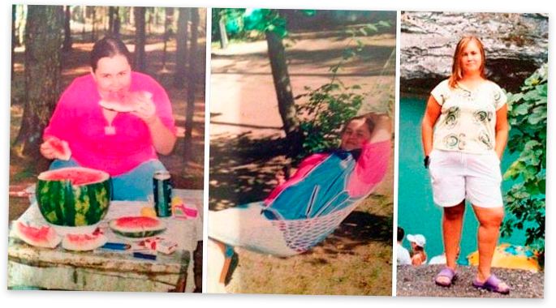

Yo nunca he estado delgada, pero empecé a notar que estaba engordando cada vez más. Me salierontres pliegues terribles en la barriga, parecía un bulldog en bikini. Y cada vez tenía másgrandes las caderas, las piernas y el culo. Decidí conseguir un cuerpo sano y en forma por todos los medios, así que dejé de comer comida frita y grasienta y dejé a un lado las comidas copiosas antes de irme adormir. Salía a correr por las mañanas y a entrenar por las tardes en el gimnasio pero, en vezde perder kilos, seguía engordando todavía más. Después de un mes, mi peso llegué a unosterroríficos 89 kilos. Restringía mi dieta cada vez más, excluyendo la carne, el pan, los fritosy los dulces. Acabé comiendo solo frutas y verduras y no bebía otra cosa que no fuese agua. Megasté una pasta en tés y pastillas para adelgazar, pero nada me daba resultado. Después deun tiempo volvía a ganar los kilos que había perdido.
Ni las dietas ni las pastillas funcionan. ¡Son una estafa! Entrenar es demasiado duro y lleva mucho tiempo empezar a ver progresos. Así que, ¿qué es lo que hice?

Tras miles de dietas, pastillas y horas en el gimnasio y cientos de euros invertidos en un entrenador personal, me rendí por completo. Un día me topé con un artículo sobre Choco Lite y decidí probarlo. A pesar de que había leído que Demi Moore, Katy Perry, J-Lo y otras famosas habían perdido peso con este producto, yo tenía mis dudas. Pero ya lo había probado todo y estaba desesperada, ¡así que no tenía alternativa! Además, leí los comentarios sobre el producto y eran superpositivos.
Millones de mujeres de Europa y Estados Unidos se han deshecho de sus kilos de más gracias a Choco Lite. Según una investigación, el 96,7 % de ellas perdió 11-17 kilos en tres semanas.